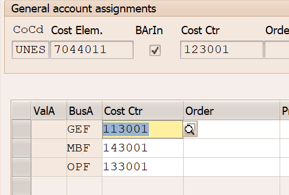
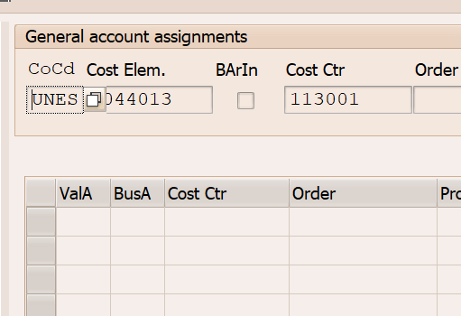
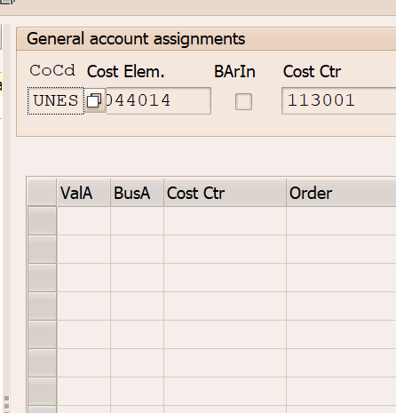
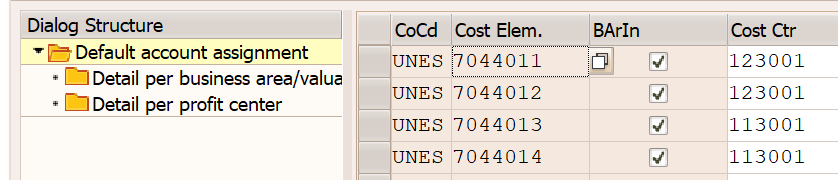
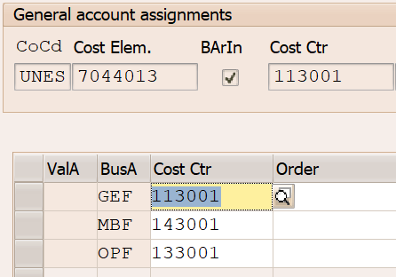
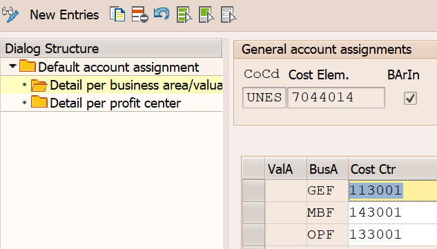

INC-000008088 — Interest Auto-Posting Change (final design)
Scope of split: only Société Générale banks (the only HQ banks where the MT940 statement carries a SPECIFIC
NINT external code).
| Layer | D01 fresh state (RFC re-extract) |
|---|---|
T033G acc symbol → mask | INTEREST_REC → +++7044013 · INTEREST_REC_B → +++7044014 · INTEREST_PAID → +++6044011 (untouched). All obsolete _A/_C/_D entries deleted. |
T028V VGTYP catalog | SOG_FR (parent, kept) · SOG_FRB (new) · TR_TRNF (parent, kept). No orphan clones. |
T028D posting key catalog | 111B (new) · 111I (existing) · 111O (existing). Obsolete 111A/111C/111D deleted. |
T028G external → internal | SOG_FRB has 18 rows cloned from SOG_FR; only NINT+ redirected to 111B. NTRF/NCHK/etc keep parent's posting rules. |
T028B bank → VGTYP | SOG_FR=7 banks · SOG_FRB=2 banks (HKONT 0001075011 USD, 0001075912 EUR-Deposit) · SOG_EUR4=1 (alpha bank). |
🎯 Lesson Learned (TIER_1) · Why this looked simpler than it was
The original ask from Treasury was to split interest into 4 group GLs (A/B/C/D) across all 26 HQ bank accounts. The original architectural plan (Sessions #062-#070) assumed all 26 banks could be split via OT83 customizing — 4 new VGTYPs, 4 new posting rules, 4 new acc symbols, mass T028B reassignment.
The architectural blocker (discovered Session #71): SAP's EBS posting engine routes credits to GLs based on the external transaction code emitted by the bank in the MT940 :86: tag. To split interest from non-interest credits, the bank must emit a SPECIFIC code (e.g. NINT = Normal Interest). At UNESCO, only Société Générale emits NINT reliably. All other Treasury HQ banks (BNP-Paribas, CIC, CRCAM, Citibank, Standard Chartered, Northern Trust BFM/HED, Banque Populaire) emit only generic codes (NTRF, NCHK) for ALL credit lines including interest. There is no signal in the statement to drive routing logic for those banks.
Validated with Marlies Spronk (Treasury Middle Office) on 2026-05-05. The generic configuration was decided in the past for those banks; Treasury accepts that those interest credits continue posting to
7044011 as a known limitation.
Brain anchor: claim 173 (TIER_1, supersedes 167-170). Feedback memory: feedback_external_code_discrimination.md · always validate T028V external-code catalog before proposing any group-split EBS design.
Executive Summary
SOG_FR VGTYP + posting key 111I + acc symbol INTEREST_REC with the mask changed from +++7044011 to +++7044013. Group B (2 accounts, savings/USD) routes through a NEW SOG_FRB VGTYP + NEW posting key 111B + NEW acc symbol INTEREST_REC_B with mask +++7044014. All other HQ banks keep their current generic config (interest still lands on 7044011).
The 2 Categories of Banks (and why only one can be split)
Every UNESCO HQ bank account falls into one of two categories based on what the bank emits in the MT940 :86: external transaction code:
| External Key column value | Significado | ¿Se puede derivar interés? | Implementación |
|---|---|---|---|
NINT (Normal Interest) |
El banco emite código SWIFT-estándar específico para interés en el campo :86: del MT940 |
✅ SÍ — especifico, se puede derivar | Routing customizing OT83 (T028G NINT+ → posting key dedicado → INTEREST_REC_X mask → GL específico) |
Generic (NTRF, NCHK, NCLR, etc.) |
El banco emite el mismo código genérico para TODOS los créditos — interés mezclado con transferencias, refunds, dividendos, etc. | ❌ NO — genérico, hoy no se puede derivar al SAP layer | Sin discriminator. Treasury aceptó quedarse con la config legacy 7044011 hasta que el banco cambie su mensajería o se haga un parsing customizado del :86: via YTBAM001. |
✓ NINT-capable banks (splittable)
Bank emits NINT (Normal Interest) as a separate external code, distinct from NTRF (Normal Transfer). SAP can read the code in T028G and route to a different posting rule.
- Société Générale — 9 accounts at UNESCO HQ (SOG01, SOG03)
Implementation: split into Group A (current accounts) → 7044013 and Group B (savings + USD) → 7044014
⚠ Generic-only banks (NOT splittable)
Bank emits only NTRF (or equivalent generic) for ALL credits — interest, dividends, refunds, transfers all share the same code. SAP has no discriminator at the EBS layer.
- BNP-Paribas, CIC, CRCAM, Banque Populaire, Citibank, Standard Chartered, Northern Trust BFM/HED, etc.
Implementation: no change. Interest credits continue routing through generic NTRF → posting rule 102I → BANK_SUB → bank's clearing GL or 7044011 default. Treasury accepted this limitation 2026-05-05.
Final Design (implemented in D01, pending P01 transport)
The customizing changes (the entire INC-8088 implementation)
| # | OT83 Folder · Table | Action | Detail |
|---|---|---|---|
| 1 | Folder 2 · T033G "Assign accounts to symbol" | UPDATE existing | Acc symbol INTEREST_REC · KOMO1=+ · KOMO2=+ · mask +++7044011 → +++7044013 (Group A absorbs the default) |
| 2 | Folder 1 · T033F "Create acc symbols" | CREATE new | NEW acc symbol INTEREST_REC_B "Interest received - Saving Accounts (Group B)" |
| 3 | Folder 2 · T033G | CREATE new | INTEREST_REC_B · KOMO1=+ · KOMO2=+ · mask +++7044014 (Group B) |
| 4 | Folder 3+4 · T028D + T033F | CREATE new posting rule | NEW posting key 111B "Interest received Group B" — App 0001 · DR posting key 40 / CR posting key 50 · CR symbol INTEREST_REC_B |
| 5 | Folder 5 · T028V | CREATE new VGTYP | NEW transaction type SOG_FRB (clone of SOG_FR for Group B) |
| 6 | Folder 6 · T028G "External → internal" | CREATE rows | For VGTYP SOG_FRB: NINT+ → 111B, plus clone all existing SOG_FR external-code mappings (NTRF, FCHG, etc) so non-interest credits keep flowing to their original posting rules. |
| 7 | Folder 7 · T028B "Bank acct → VGTYP" | UPDATE 2 banks | Reassign 2 SOG Group B accounts (HKONT 0001075011 USD, HKONT 0001075912 EUR-Deposit) from SOG_FR → SOG_FRB |
Group A (7 SOG accounts) need NO T028B change — they stay on SOG_FR; the INTEREST_REC mask redirect (change #1) automatically routes them to 7044013.
The 9 SOG bank accounts split (verified D01 2026-05-06)
BNKKO = Cash Management label visible on SAP screen · HKTID = technical Acct ID stored in T012K. Both refer to the same account.
| Grp | HKONT | BNKKO | HBKID | HKTID | Crcy | VGTYP | Posting key | Acc symbol | → GL |
|---|---|---|---|---|---|---|---|---|---|
| A | 0001075012 | SOG01-EUR1 | SOG01 | EUR01 | EUR | SOG_FR | 111I | INTEREST_REC | 7044013 |
| A | 0001075032 | SOG01-EUR3 | SOG01 | EUR03 | EUR | SOG_FR | 111I | INTEREST_REC | 7044013 |
| A | 0001075043 | SOG03-JPY1 | SOG03 | JPY01 | JPY | SOG_FR | 111I | INTEREST_REC | 7044013 |
| A | 0001075023 | SOG03-AUD1 | SOG03 | AUD01 | AUD | SOG_FR | 111I | INTEREST_REC | 7044013 |
| A | 0001075093 | SOG03-GBP1 | SOG03 | GBP01 | GBP | SOG_FR | 111I | INTEREST_REC | 7044013 |
| A | 0001075063 | SOG03-DKK1 | SOG03 | DKK01 | DKK | SOG_FR | 111I | INTEREST_REC | 7044013 |
| A | 0001075083 | SOG03-CHF1 | SOG03 | CHF01 | CHF | SOG_FR | 111I | INTEREST_REC | 7044013 |
| B | 0001075011 | SOG01-USD1 | SOG01 | USDD1 | USD | SOG_FRB | 111B | INTEREST_REC_B | 7044014 |
| B | 0001075912 | SOG03-EUD1 | SOG03 | EURD1 | EUR | SOG_FRB | 111B | INTEREST_REC_B | 7044014 |
Plus SOG01-EUR4 (HKONT 0001075042 EUR) on its own VGTYP SOG_EUR4 — alpha bank, out of the A/B split.
Banks NOT split (generic external codes only)
All these accounts use generic external codes (NTRF, NCHK, etc.) for ALL credits, so SAP cannot tell interest from non-interest. Examples:
- BANQUE POPULAIRE RIVES DE PARIS · BPP01-EUR01 · HKONT 0001036012
- BNP-PARIBAS SA · BNP01-EUR02 · HKONT 0001038032
- CREDIT INDUSTRIEL ET COMMERCIAL CIC · CIC01-USD01 · HKONT 0001008011
- CRCAM DE PARIS ET D ILE DE FRANCE · CRA01-EUR01 · HKONT 0001035012
- STANDARD CHARTERED BANK · multiple accounts
- NORTHERN TRUST COMPANY · BFM (ASHI EUR/USD) and HED (PFF Nessim) accounts — original Treasury Group C and D targets
For these accounts the existing config (TR_TRNF / NTRF+ → 102I → BANK_SUB) is unchanged. Interest credits continue posting to 7044011 via the generic flow. This is the accepted limitation.
🔗 Full Derivation Pipeline · post-INC-8088 verified state
Cuando un crédito posteado por EBS llega a un GL nuevo (7044013/14), SAP corre 7 capas de derivación en orden. INC-8088 tocó tres de ellas (OT83 + ZXFMDTU02_RPY + OKB9) para que el posting termine con TODOS los campos correctos: HKONT, KOSTL, PRCTR, GSBER, FUND_CENTER, FUND.
[2] CSKS (Cost Center master) —> PRCTR (Profit Center) + KOSTL master defaults
[3] GGB1 callup 3 (UNESCO) —> GSBER (Step 002 U910 + Step 010 U904), XREF1/2, ZLSCH, ZUONR
[4] EXIT_RFEBBU10_001 (YTBAM001) —> CHECT, GSBER (override EBS), ZUONR
[5] FMDERIVE rules (declarative) —> fallback FUND/FISTL/FAREA
[6] EXIT_SAPLFMDT_002 (ZXFMDTU02_RPY) —> FUND, FUND_CENTER, BUS_AREA, WBS_ELEMENT (parche INC-8088 ↓)
[7] Validations (GB901/GB903) —> field-value validations (0 hits para los GLs INC-8088)
Knowledge ref: knowledge/domains/FI/derivation_pipeline.md · Brain anchors: claims 175 (ZXFMDTU02_RPY), 176 (OKB9), 177 (canonical pipeline reference).
[6] FundCenter / Fund · ZXFMDTU02_RPY · ABAP user-exit patch
ZXFMDTU02_RPY es el include del exit EXIT_SAPLFMDT_002 (FMDERIVE user-exit). Hardcodea bloques IF I_COBL-HKONT='xxx' que setean C_FMDERIVE-FUND_CENTER / FUND / BUS_AREA / WBS_ELEMENT. Si el HKONT no está en ningún bloque, el posting falla con "No funds center entered/derived in item 00000 (UNES/<HKONT>/)".
| HKONT range | FUND_CENTER | FUND | BUS_AREA | Líneas |
|---|---|---|---|---|
| FX P&L · 6045011 / 7045011 / 6045014 | UNESCO | GEF | (no override) | 85-115 |
| ASHI · 7043011-14 | BFM | 645ASH9000 | OPF | 119-132 |
| Nessim · 7043021 | HED | 401NHF1091 (+ WBS) | PFF | 134-145 |
| Treasury interest · 7044011 + 7044013 + 7044014 | UNESCO (per GSBER) | GEF / MBF | (input) | 152-170 · parche INC-8088 2026-05-06: linea 155 + 7044013 |
| 7044012 | UNESCO (per GSBER) | OPF / GEF | (input) | 173+ |
Sin este parche, los SOG accounts ruteados a 7044013 fallaban en producción con el error de FundCenter.
[1] Cost Center · OKB9 (TKA3D) · customizing puro
El Cost Center NO se deriva en el FM exit. Se deriva via OKB9 (table TKA3D) ANTES de la cadena FM. La key es (KOKRS, KSTAR, BUKRS) con un flag BArIn (Business Area Indicator) que activa un grid de overrides per-GSBER.
A · Estado original del 7044011 (referencia histórica)

123001 · Grid per-GSBER: GEF→113001, MBF→143001, OPF→133001. Esto es la referencia: per-GSBER routing al cost center correcto del fondo.B · Estado inicial de los nuevos GLs (BArIn=OFF, simple default) — gap detectado

113001 simple default · grid vacío — OPF/MBF postings caerían a 113001 incorrectamente.
C · Estado final post-fix (BArIn=ON + grid completo)


113001, MBF→143001, OPF→133001). Now matches the 7044011 pattern.
Evidence
| Source | What it proves |
|---|---|
| D01 RFC re-extract 2026-05-06 · tables T033G (212 rows), T028V (24), T028D (332), T028G (1043), T028B (169), T033F (1264) | D01 customizing matches the canonical Excel exactly. All 9 SOG accounts on correct VGTYP/posting-key/acc-symbol. Initial swap (1075032 ↔ 1075912) detected and corrected mid-session. |
Email Pablo Lopez → Thavry Eng, 2026-05-05 15:16 (file: RE_ Request for the change of the interest automatic postings... .eml) | Final design + the 2-category split rule. "According with the model the external banks statements have external key for the operations that allows us to understand if a line is interest". 2 attached images list banks-changed vs banks-not-changed. |
P01 Gold DB · T033G WHERE KTOPL='UNES' AND KTOSY LIKE 'INTEREST%' | Confirms only ONE INTEREST_REC entry exists for App 0001 → safe to redirect. INTEREST_PAID at +++6044011 untouched. |
| Original SAP customizing screenshot (OT83 Folder 7, "Assign External Transaction Types to Posting Rules") | Shows external codes (FCHG, NCHK, NCLR, NTRF, S202, UNALLOC) all use Interpretation Algorithm 001 / 019 — none specific to interest unless NINT exists. Generic code = no discriminator. |
| Treasury sign-off (Marlies Spronk, BFM-TRS-MO) | "I validated this situation with Marlies, and the generic configuration was decided in the past." Generic-only banks accepted as known limitation. |
| Brain claim 173 (TIER_1, Session #71, supersedes 167-170) | Architectural rule canonicalized for future agents. |
Test Plan (V01 / TST after transport)
- Apply customizing transport to V01 (Pablo: "I will transport the changes to V01 and you can do the test tomorrow morning")
- Trigger an EBS import for one Group A SOG bank carrying a NINT credit (e.g. SOG01-EUR01, HKONT 0001075012, NINT+). Run FF.5 / FEBAN. Expected: BKPF doc credits
0007044013 - Trigger an EBS import for one Group B SOG bank (e.g. SOG01-USDD1, HKONT 0001075011, NINT+). Expected: BKPF doc credits
0007044014 - Trigger an EBS import for one generic-only bank (e.g. CIC01, HKONT 0001008011, NTRF+). Expected: BKPF doc credits whatever the generic flow currently produces (likely 7044011 via the bank-clearing chain). No change vs today.
- If all 3 scenarios behave as expected → release transport to P01.